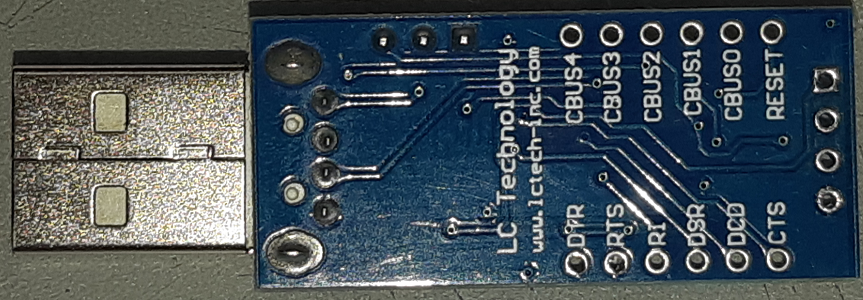
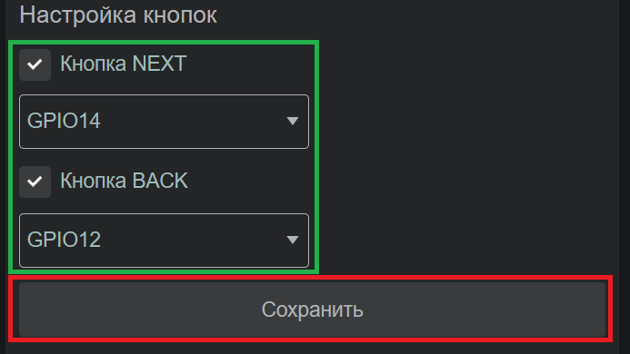

Тимофей Носов 4 июля 2023 г.
WiFi интернет-радиоприёмник «Волчонок» для начинающих
Разработчик приёмника – Сергей Белоцерковский.
Сайт разработчика – http://electronics.inf.uа/P40.html
Радиоприёмник на базе WiFi модуля ESP-12F (на микроконтроллере ESP8266).
Вывод стерео-звука 32-битным ЦАПом PCM5102A.
Воспроизведение радиопотока в формате MP3, частота дискретизации 44100 Hz,
максимальный битрейт 192 kbps (рекомендуется 64…128 kbps).
Редактируемый плейлист на 20 радиостанций, длина ссылки до 416 символов.
Напряжение питания 5 В.
Ток потребления 90 мА (без усилителя мощности).
Когда я первый раз увидел эту схему, возник вопрос «Да ладно, и это интернет-приёмник…?»
Решил проверить. Купил модули на Али и… радио заиграло ))
Звук богатый, не заикается, управление бодрое.
В этой статье покажу свой вариант сборки этой схемы.
Управление двумя физическими кнопками.
Короткие нажатия – переход к следующей/предыдущей станции.
Нажатие с удержанием – регулировка громкости.
Можно управлять со смартфона и с ПК через веб-интерфейс на странице в браузере.
Дистанционное управление пультом ДУ через ИК приёмник я не пробовал.
Можно выбрать линии подключения кнопок и ИК приёмника в веб-интерфейсе;
это даёт гибкость в компоновке платы и соединений.
Обучение кнопкам пульта ДУ выполняется в веб-интерфейсе.
Веб-интерфейс одностраничный, уютный, понятный, с плюшками.
Подгружаются метаданные – текст и картинки, если станция их транслирует.
Загрузка и редактирование плейлиста радиопотоков в простом текстовом файле.
Понравилась кнопка ↓ «Скачать» – на ПК скачивается MP3 файл, который сейчас играет.
Далее вместо тысячи слов один скриншот.
От разработчика приёмника исходная схема выглядит так:
Если сравнить рисунок соединения модулей в начале статьи и принципиальную схему, то видим дополнительные детали. Сейчас важно отметить, что аудио модуль PCM5102A подключается тремя сигнальными линиями BCLK на GPIO15, LRCK - GPIO2, DIN - GPIO3; ну и две линии питания 5 Вольт. Повторюсь, кнопки управления и ИК-приёмник VS1838B можно подключать к некоторым другим линиями ESP-12F. При замыкании джампера J1 модуль ESP-12F переводится в режим прошивания (программирования); в режиме воспроизведения радиопотоков джампер не нужен.
Примечание. Обозначение GPIO, GP, IO по сути одно и тоже – линия ввода-вывода.
При должном желании эту схему можно собрать проводами, но я перенесу на небольшую плату под свой корпус. Планируется использовать этот приёмник как автономную приставку к колонкам (динамикам). В исходной схеме нет индикации, но есть линия GPIO2, которая подключена к мелкому светодиоду на модуле ESP-12F; этот светодиод светит в момент воспроизведения и не светит когда нет воспроизведения (связи). В схему добавлю индикацию режимов работы на внешний многоцветный RGB светодиод – наличие питания, воспроизведение, пауза.
Размер платы 40х41 мм. Плату делал ЛУТом. Файл платы здесь.
Далее по рисунку печатной платы отрисуем фактическую схему.
На схеме модуль ESP-12F – для приёма по WiFi цифрового радио-потока, покупал здесь 76 руб.
Модуль PCM5102 – для преобразования цифры в аналоговый звуковой сигнал, цены см далее.
Модуль GF1002 – усилитель мощности 2 х 3Вт для подключения динамиков, здесь 48 руб.
Модуль GF1002 можно не подключать, если планируются только наушники или активные колонки.
ИК приёмник VS1838B и кнопки можно не подключать, если планируется управление через веб.
Питание больше 6 Вольт убьёт схему, но это не точно.
Для хорошего звука усилителя на высокой громкости блок питания должен выдавать 2 Ампера.
Как прошить/перепрошить/считать модуль ESP-12F(E) с микроконтроллером ESP8266 ?
Процедура прошивания может отпугнуть от сборки конструкции приёмника, как и любой другой конструкции, где нужно что-то прошить. Расслабьтесь, это не сложно. Нам потребуется бубен:
- файл прошивки ESP12-20220112-1940.bin
- программа для прошивания NodeMCU-PyFlasher-4.0-x64.exe
- преобразователь USB-UART для подключения к компьютеру и прошивания.
Схема подключения преобразователя USB-UART к модулю ESP-12F(E):
Мой преобразователь USB-UART собран на FT232RL и выглядит так (купил в ларьке ~100 руб, ссылку дать не могу);
в любом поисковике аналогичных преобразователей как грибов за баней.

Подпаиваем 6 отрезков провода по 20 см к частично собранной плате приёмника так:
Аналогичным подключением можно прошить/перепрошить полностью собранную схему,
но для этого нужно подать в схему приёмника внешнее питание 5 Вольт.
Запускаем программу PyFlasher.
Выбираем COM-порт (у меня преобразователь USB-UART занял порт COM8).
Выбираем прошивку ESP12-20220112-1940.bin.
Выбираем скорость прошивания 115200 бит/сек.
Выбираем режим прошивания – Dual I/O (DIO).
Выбираем очистку памяти – yes, wipes all data.
Нажимаем кнопку старта прошивания – Flash NodeMCU.
Если всё исправно и правильно подключено – наблюдаем процесс прошивания (~60 сек).
В завершении наблюдаем
Отпаиваем провода от платы и продолжаем собирать дальше.
PCM5102A это 32-битный стереофонический цифро-аналоговый преобразователь (ЦАП).
Вдумайтесь, 32 бита это какая детализация звука, будущее наступило.
Приобретал на пробу здесь за 187 руб и здесь за 285 руб. Размер модуля 32х17 мм.
Удивительное качество звука за такие деньги; на часок залип в проводных наушниках-затычках от смартфона Samsung.
На модуле PCM5102A могут быть или могут отсутствовать перемычки. Перемычки нужны!
Перемычки, смонтированные в поставке от продавца, смотрятся убого.
Если перемычки отсутствуют или не нравятся, напаиваем капельки припоя.
Перемычка H1L в положение L.
Перемычка H2L в положение L.
Перемычка H3L в положение H.
Перемычка H4L в положение L.
Затем впаиваем межплатную вилку PLS на 6 контактов. Остатки флюса отмываем и сушим.
Теперь можно припаять модуль PCM5102A к нашей самодельной плате.
Проводами соединяем с модулем усилителя GF1002.

Рукоделим отверстия в панелях типового корпуса Gainta G404/G434 (размер 90х50х32 мм, покупал за 160 руб).
Шаблоны отверстий под корпус Gainta G404/G434 здесь, распечатываем, вырезаем, наклеиваем, сверлим.
Крепим регулятор громкости, держатель светодиода, кнопки, разъёмы.
Плату крепим на 2 мелких самореза на пеньках в корпусе.
Адское количество провода. Ну а что делать? Православный МГТФ-0,2 наше всё. Рекомендую. 18 отрезков по 12 см. Я сомневался, что аудио-сигнал до усилителя на проводах без экранирования может испортиться и поймать наводки, но вышло всё отлично, помех нет.
Для подключения колонок к усилителю применены не по назначению RCA разъёмы из цыганского золота.
С выходной мощностью 2 х 3Вт разъёмы RCA работать будут. Да и выглядят нарядно.
Наименование фурнитуры для ориентира или покупки (ссылки кликабельны):
Gainta G404/G434 – корпус тёмный и корпус светлый размером 90х50х32 мм
PL2171 – разъемы RCA красный правый канал, чёрный левый канал
DC025M – гнездо питания центральный контакт плюс, внешний контакт минус
L-KLS7-PBS-004D-B – мини кнопка разомкнутая, без фиксации
PBS-10B-2 black – мини кнопка разомкнутая, без фиксации
CB-50 – держатель светодиода диаметром 5 мм и похожие держатели
BL-L515RGBW-CC – матовый 5мм RGB светодиод с общим катодом
Ручка декоративная – 15*17 мм на вал регулятора «звёздочка» диаметром 6 мм
Скручиваем половинки корпуса.
Подключаем ненужные колонки.
Ненужные колонки продаются на Авито.
Теперь о настройке.
1. Подаём питание. В WiFi сети смартфона находим «WiFi-Radio» и подключаемся (без пароля).
На смартфоне запускаем браузер и набираем адрес 192.168.4.1 – загружается веб интерфейс.
2. В настройках беспроводной сети ставим галку «Подключаться к роутеру 1», выбираем наш роутер и вводим пароль. Нажимаем «Сохранить». Приёмник перегружается, подключается к роутеру и более недоступен по адресу 192.168.4.1.
Если приёмник не сможет подключится к роутеру за 1 минуту, он снова создаст свою точку доступа с именем «WiFi-Radio».
3. Далее роутер нашему приёмнику автоматически назначает свободный IP адрес.
Дальнейшие действия выполняем со стационарного компьютера в сети, так удобнее.
На ПК в браузере входим в приёмник по адресу http://radio/
Мы видим, что роутер выделил приёмнику адрес 192.168.1.105 (у вас может быть другой адрес).
Именно по этому адресу (192.168.1.105) теперь мы можем заходить в приёмник со смартфона.
На этом сетевые настройки можно закончить, но есть дополнительные настройки сети.
4. Далее выполняем аппаратные настройки.
Включаем кнопки, выбираем порты кнопок и жмём «Сохранить».

Включаем «Вывод звука на I2S ЦАП», выбираем Стерео и жмём «Сохранить».
5. К моменту сборки вашего приёмника часть станций из плейлиста может не работать.
А мы затевались с приёмником ради своего плейлиста и набора станций.
«Экспорт» – это выгрузка плейлиста из приёмника в компьютер в файл с именем «playlist.txt»
«Импорт» – это загрузка плейлиста из компьютера в приёмник.
Открываем файл «playlist.txt» стандартным «Блокнотом». Внутри текст:
{"radio":[
"http://playerservices.streamtheworld.com/api/livestream-redirect/TLPSTR15.mp3",
"http://icecast227.ptspb.ru:8104/monte",
"http://sc2b-sjc.1.fm:7704",
"http://jfm1.hostingradio.ru:14536/rcstream.mp3",
"http://retro80.hostingradio.ru:8025/retro80-128.mp3",
"http://stream.funradio.sk:8000/fun192.mp3",
"http://stream.funradio.sk:8000/80-90-128.mp3",
"http://stream.funradio.sk:8000/chill128.mp3",
"http://stream.funradio.sk:8000/dance128.mp3",
"http://emgspb.hostingradio.ru/europaplusspb128.mp3",
"http://nashe.streamr.ru/jazz-128.mp3",
"http://nashe.streamr.ru/ultra-128.mp3",
"http://nashe.streamr.ru/rock-128.mp3",
"http://icecast.gtrk22.ru:8000/HFMhigh",
"http://a1.radioheart.ru:8001/marusya37",
"http://vanyareg.hostingradio.ru/saratov.vanya128.mp3",
"http://nashereg.hostingradio.ru/saratov.nashe128.mp3",
"http://srsaratov.hostingradio.ru:80/srsaratov128.mp3",
"https://abstrait.stream.laut.fm/abstrait",
"https://cast.magicstreams.gr:9125/stream/1/"
]}
Адреса интернет потоков начинаются с https://
И таких строк 20 шт. Длина ссылки до 416 символов.
Адреса пишутся между двойными кавычками.
Все скобки, кавычки и запятые должны быть.
Меняем адреса между кавычек.
Откуда брать адреса интернет-радиопотоков?
Предлагаю небольшую подборку на 560 ссылок интернет потоков в этом файле; следите за обновлениями.
В Интернете много профильных статей и форумов как «вытянуть» ссылку на поток.
Напомню, что радиопотоки должны быть в формате MP3 с битрейтом до 192 kbps.